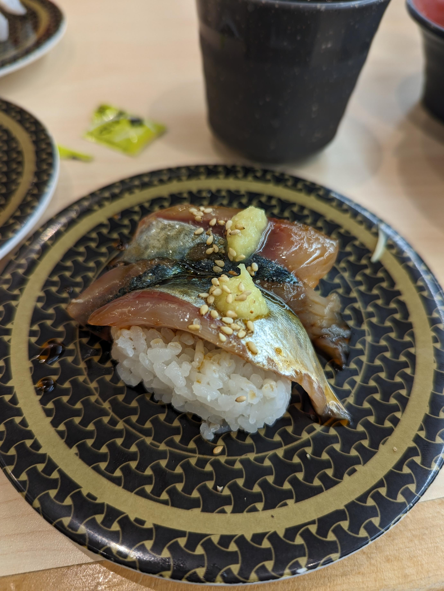
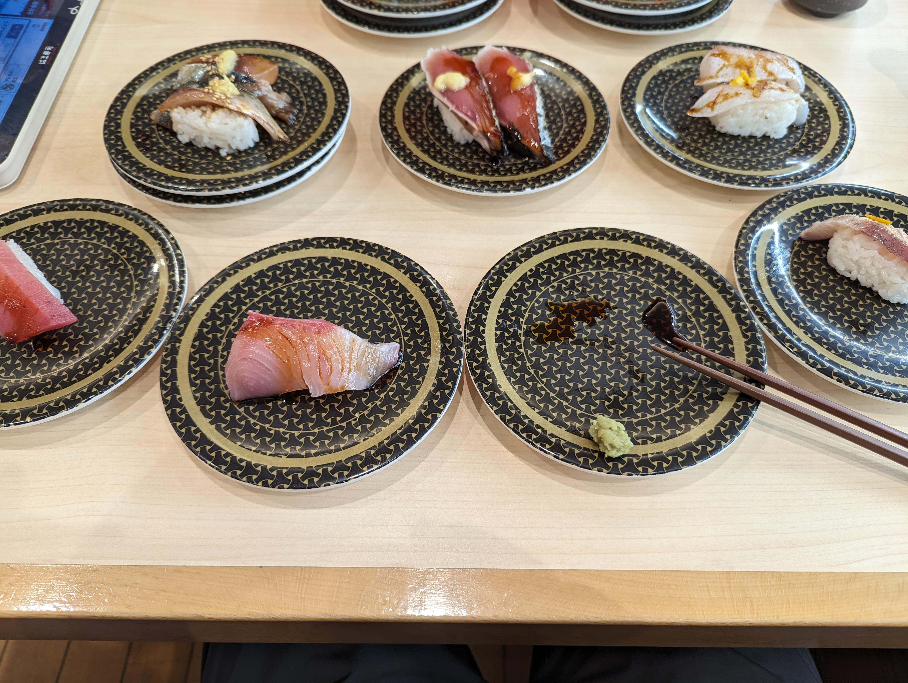

はま寿司。

寿司に囲まれてる。 私は寿司に囲まれるのが好きだ。
店で待っている時、偶然出くわしたような家族同士が話していた。全然喋らない子供に対して、父親のような人が「どうして喋らないんだ、恥ずかしいのか？」というようなことを聞いていた。
私もあまり喋らない子どもだったので、同じようなことを言われたことがあるなあ、と思い出した。
こっちからすると、恥ずかしいというより、ただ単に話したいと思っていないのだ。聞きたいこともないし、伝えたいこともないので、特に口を開かないのは合理的な選択の結果だ。でも、恥ずかしがって喋らないと思われている。
私は、人は他人からどう思われているかによって振る舞いが決まると思っている。他人から恥ずかしがりだと思われている人は、その人を驚かせないために、わざと恥ずかしがりのふりをする。それが楽だから。
自分のネイティブの言語ではない言葉を話しているときに明るくなる人というのがいるけど、あれは話し相手が自分に何の仮定も置いてないから、自分のありたい自分として自由に振る舞えるようになった結果なのだと考えている。
今日のはま寿司も、相変わらず炭治郎がうるさかったな。